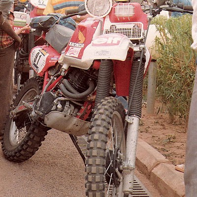
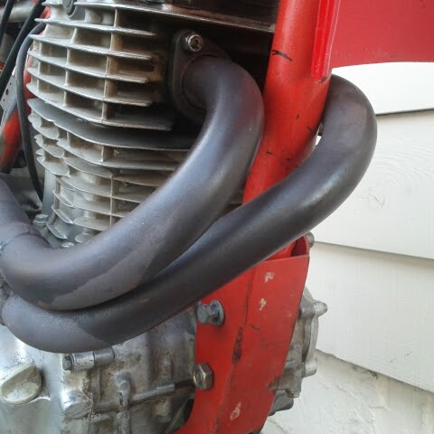
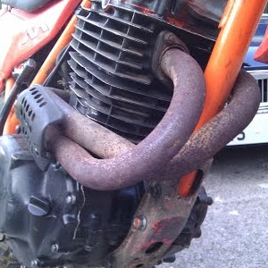

Sweet symphonies
Join the conversation on Facebook
OEM XR500R 81/82
As soon as I got my first XR500R, back in 1981, I realized that its exhaust header was of a smaller diameter than the one on the XR500 79/80. No need to say, I was disappointed. There must have been a good reason for that (probably something to do with the reed valve inlet) for me, bigger had to be better. Fast forward several decades and it now has a XR500 header.
In 1982, the XL500R was fitted again with larger diameter pipes (and an additional heat shield to protect the clutch and automatic decompressor cables).
In 1980, the racing wisdom was that a tricked XR500 would benefit from not only bigger pipes but header pipes of the same length and volume. Al Baker got Mugen to build a header that would be commercialized and fitted to the racing bikes of the day, from the Baja to the Paris Dakar.

1982 XR550R of Jacky Barat at the Paris Dakar 1983, with the Mugen header

Pro-tec in business. The stock heat shield can be fitted onto the Pro-tec

I think this one is Supertrapp